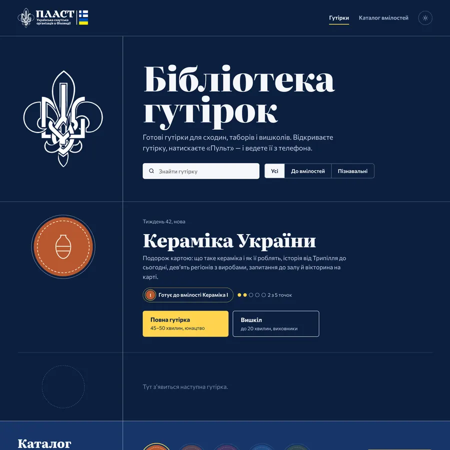
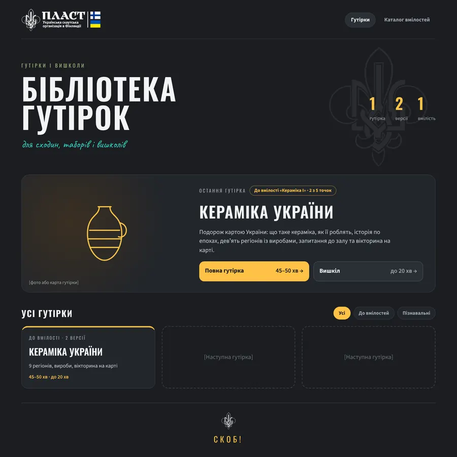

13.10.2026
- ≈ 17:00–20:00
Гутірка «Кераміка України» і пульт з телефона
Гутірка-подорож картою України: що таке кераміка, як її роблять, історія по епохах, девʼять регіонів із виробами, запитання до залу й вікторина на карті. Дві версії: повна для юнацтва (45–50 хв) і вишкіл (до 20 хв). Пульт: телефон гортає гутірку на ноутбуці через QR-код або 6-значний код. Спершу все було одним файлом, який відкривали з диска, а сторінка пульта жила на Netlify.

Титульний слайд гутірки «Кераміка України» - 20:02–20:10
Сайт на GitHub Pages
Зʼявився обліковий запис gutirky-fi і сайт gutirky-fi.github.io: усе за одним посиланням, а оновлення приходять самі. Сайт прихований від пошуковиків.

Перша версія головної сторінки - 20:19–20:30
Зручніше вести гутірку
Кнопка «Пульт» на головній лишилась тільки на телефоні. Меню гутірки зібране в одному місці, у правому верхньому куті. Прибрано стрілки й гортання біля країв, щоб випадково не перегортати слайди.
- ≈ 20:40–22:15
Пошук дизайну
Варіанти: А «Графіт», Б «Нічна ватра», В «Відзнаки», їх поєднання, Г, три варіанти Д з логотипом Пласту у Фінляндії і Е «Північний хрест», зроблений з нуля. Умовну скаутську лілею замінено справжнім логотипом. Обрано варіант Д1.

Варіант Е «Північний хрест» — не обрано 
Варіант Д1 — обрано - 22:18–22:54
Робоча копія і правки
Перед тим як ставити на сайт, зроблено копію в новому дизайні, по якій можна клацати. Правки: «Пластове юнацтво» і «для сходин гуртка і таборів» замість «вишколів»; без обіцянок щотижневих гутірок; карта України з гутірки в блоці «Остання гутірка»; рівно по центру «СКОБ!» унизу; меню, зміст і вікно пульта в гутірці — у тому самому стилі.
- 22:55
Дизайн Д1 на сайті
Новий дизайн із логотипом Пласту у Фінляндії опубліковано.

Головна сторінка в дизайні Д1 - 22:59–23:02
Значок вкладки
У вкладці браузера замість глобуса — емблема Пласту.

Значок у вкладці (збільшено) - 23:10–23:43
Каталог вмілостей
Спершу 14 вмілостей для прикладу, потім 448 назв з бібліотеки вмілостей Пласту (plast.global), а в підсумку — 162 вмілості з каталогу Пласту у Фінляндії зі справжніми нашивками. Кожен рівень веде на свою сторінку на порталі Пласту у Фінляндії.
- 23:52
Нашивки
Чорно-білі нашивки (вмілості Пласту в Польщі) стоять на світлій підкладці, щоб їх було видно на темному тлі. «Настільні ігри» — без білого квадрата.

Каталог з нашивками на телефоні
14.10.2026
- 00:05–00:16
Рішення: нашивки не перефарбовувати
Офіційні нашивки лишаються такими, як на plast.global і порталі Пласту у Фінляндії, щоб на всіх сайтах вони збігались.
- 00:25–00:31
Памʼять проєкту
Усі робочі файли й повний опис проєкту збережено на GitHub, щоб продовжувати роботу з будь-якої нової розмови. Щороку 1 вересня каталог вмілостей перевірятиметься автоматично.
- 00:45
Сторінка історії
Ця сторінка: хронологія створення і розвитку сайту.
- 00:50
Чорно-білі нашивки — у кінець
У каталозі й у кожній спеціалізації спершу йдуть вмілості з гутірками, далі — з кольоровими нашивками, а чорно-білі та без нашивки — в самому кінці.
Усі публікації сайту
Кожне оновлення, яке потрапило на gutirky-fi.github.io, — від найновішого.
- Сторінка «Історія сайту» (/istoriya/, не в меню): хронологія створення і всі публікації
- Опис проєкту: щорічна перевірка каталогу вмілостей
- Робочі файли й опис проєкту в _robota/, щоб продовжувати з будь-якої нової розмови
- Прибрано сторінку перевірки нашивок
- Сторінка для перевірки нашивок вмілостей (не в меню сайту)
- Каталог: чорно-білі нашивки на світлій підкладці, квадратна картинка обрізана по колу
- Каталог вмілостей: перелік і нашивки з каталогу Пласту у Фінляндії
- Значок вкладки: справжня контурна емблема замість заповненого силуету
- Значок вкладки: емблема Пласту (сайт і пульт)
- Новий дизайн Д1: логотип Пласту у Фінляндії, каталог вмілостей
- Гутірка: прибрано стрілки біля країв (щоб не гортати випадково)
- Гутірка: гортання кліком біля лівого/правого краю, меню без «Назад/Далі»
- Головна: пульт лише на телефоні, без блоку «Додати гутірку»
- Бібліотека гутірок: перша версія сайту